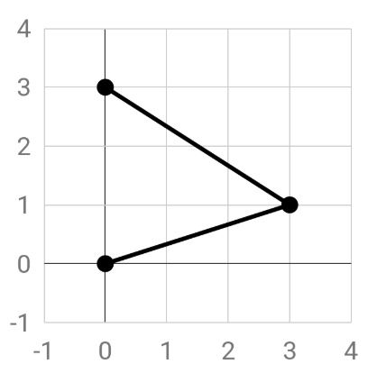

Using Python to Develop Custom Nodes in Dynamo¶
1. Visual Programming in Dynamo¶
Dynamo is an application that allows you to program in a highly visual and intuitive manner. It can either be used on its own (“Sandbox” mode) or in combination with other software (e.g. Revit). Using Dynamo, you can compose a visual programming process from a sequence of nodes. In this way, you can easily develop custom algorithms to process data.
Would you like to learn more about working with Dynamo in various contexts, or you need help to get started? Please refer to this primer, which provides you with a great overview of how you could use Dynamo.

What we will discuss in this tutorial:
In this tutorial we will focus on developing custom nodes in Dynamo using Python. This increases our flexibility and efficiency to create a custom algorithm that does exactly what we would like it to do.
The current tutorial is based on section 10 of the aforementioned primer and summarizes other relevant parts where applicable. Hence, it is developed to be a concise stand-alone tutorial that focuses on the usage of Python in Dynamo. However, we will also cover some basic concepts of Dynamo for novices.
What you will need:
We will use Dynamo Studio (2017) to develop the custom nodes. This programming environment is released by Autodesk. If you have a student Autodesk account, you can download the software for free here. You can create a student account using your TU/e mailadres to gain access to the software. Once you have downloaded the software from the Autodesk website, you should receive an email with a serial number and product key that are valid for 3 years. Unfortunately the software is only available for Windows.
2. What are Nodes?¶
Nodes in Dynamo are the key ingredients of your algorithm. They capture all actions that have to take place, which can range from reading and storing data to querying.
Anatomy of a Node
(Summarized from here.)
Most Nodes in Dynamo are composed of five parts. While there are exceptions, such as Input Nodes, the anatomy of each Node can be described as follows:

| 1. Name | The Name of the Node. This follows a Category.Name structure where in the example about “Point” is considered a category to which this node can be applied. |
| 2. Main | The main body of the Node. |
| 3. Ports (in/out) | The wires that connect nodes are attached here. These wires can be the suppliers of input data (in) or the results of the node (out). |
| 4. Lacing Icon | Indicates the Lacing option specified for matching list inputs. For more information see here or here. |
| 5. Default Value | Some nodes have default values for their inputs. These can be accessed by right-clicking an input Port. |
3. Custom Nodes (summarized from here)¶
As said before, custom nodes are a great way to extent the possibilities of Dynamo. They allow us to create the exact nodes that we need to efficiently develop a custom algorithm when these are not available out of the box. Furthermore, by combining multiple actions, custom nodes can help you keep your graph clean and readable.
Important to know is also that you can store the nodes you have created and reuse them in different projects. If you have different versions of the node you created, you can easily update them in one go by editing the base node. Moreover, you can share the nodes that you developed with fellow programmers.
One way to develop custom nodes is through the Custom Node Environment. This environment is very similar to the one in which you build your Dynamo processes. In here, you can use the standard Dynamo syntax to create your own nodes. For more information and a simple example, see here. A more complex example can be found here.

4. Why Build Custom Nodes Using Python?¶
Although visual programming can be very intuitive, it also has the downside that a graph can become cluttered and chaotic. Furthermore, the out-of-the-box functionality offered by the nodes available in a graphical interface can limit the functionality and flexibility of you as a programmer. In some cases, it can therefore be useful to implement some textual programming. This can be done using Python.
A good example of where Python can help you to keep your graph readable is in the case of looping. Capturing a loop in Dynamo can lead to a large web of nodes and wires. However, the same can often be achieved by a few lines of code when using Python. Take for example the process shown below (source). Modelling this process would require you to specify almost 30 nodes and connect them properly. Alternatively, you can use the relatively concise piece of code below to achieve the same result.

import clr
clr.AddReference('ProtoGeometry')
from Autodesk.DesignScript.Geometry import *
solid = IN[0]
seed = IN[1]
xCount = IN[2]
yCount = IN[3]
solids = []
yDist = solid.BoundingBox.MaxPoint.Y-solid.BoundingBox.MinPoint.Y
xDist = solid.BoundingBox.MaxPoint.X-solid.BoundingBox.MinPoint.X
for i in xRange:
for j in yRange:
fromCoord = solid.ContextCoordinateSystem
toCoord = fromCoord.Rotate(solid.ContextCoordinateSystem.Origin,Vector.ByCoordinates(0,0,1),(90*(i+j%val)))
vec = Vector.ByCoordinates((xDist*i),(yDist*j),0)
toCoord = toCoord.Translate(vec)
solids.append(solid.Transform(fromCoord,toCoord))
OUT = solids
5. Creating a New Python Node¶
You can create a add a Python Node to your graph under Core>Scripting. If you double click a Python node, a scripting interface will open in which you can edit the code behind it.

To assess the functionality of Dynamo in your script, you can use the Autodesk.DesignScript module. This allows you to use some of the Dynamo syntax (see here for more information). This can be very useful if you are working with geometric objects. For example, if you import this module you can work with Point geometries. The interface also provides you with suggestions for methods that you can apply when you type in one a geometry type. To illustrate, if you type Point. you will be provided with a lists of methods that you can use to query or create points.
6. Exercise: Custom Python Node in Dynamo Studio¶
The following exercise is based on this. However, we will discuss some basics of Dynamo in greater detail for those that have no or minor experience working with Dynamo. Also, the steps that you will need to take are discussed more elaborately here, with extra illustrations.
In this exercise we will develop a pattern from a solid rectangular element. We will do this using both regular and custom nodes in Dynamo.

6.1 Starting the project¶
Start Autodesk Dynamo Studio (2017) and create a new workspace.

You can find all the regular Dynamo nodes that you will need by searching the library in the left hand panel.

After you found the node that you need, you can click it once to add it to your graph. If you want to delete a node, simply right click it.
6.2 Creating the rectangular geometry¶
We will start by creating the rectangular object, for which we will use three nodes.
A code block node is used for the input. The input concerns the length and width (same size) of the rectangular object. To add a code block node, look it up in the library and click it once.
You can now add a value for the width and height of the object to the content of the code block, as show below.

Next, look for a Rectangle.ByWidthLength node and add it to your graph. Connect the output of the codeblock to the width and length input of the newly added node.

Then add a Surface.ByPath node to create a surface. Connect the output of Rectangle.ByWidthLength to its input.

You should be able to see a preview of the created surface in the background of your workspace.

Tip: If you want to pan and zoom in the 3D preview (instead of your model), you can do so by selecting the background navigation in the top right of your screen.

3. Manipulating the Surface¶
Now that we have created our geometric object, we will start manipulating it to create a curved surface.
First, we start by adding a thickness to our surface. We do this by including another code block, which contains the value that captures the thickness of our rectangle. Then we connect this code block node to a Geometry.Translate node at the zTranslation receptor. This means that we will lift the geometry by the amount of units specified in the code block. Further, we connect the output of the Rectangle.byWidthLength node to the geometry input.

Next, we add a Polygon.Points node, which will query the translated rectangle to extract the points located at the corners. This will provide us with a set of points that we can use as input for our next step.
We can then add another Geometry.Translate node to lift up these points. Again, we use a code block to define how much each of the corners will be lifted. In this case we will need a list of values, since not every point will be lifted to the same height. We do this by adding the four values to the code block between {} brackets.
In the preview, you should be able to see that one of the points is lifted above the others.

Next we create a new polygon based on the four points using Polygon.ByPoints. We can then develop a surface from this polygon using Surface.ByPatch.

Next, we will need to connect the surfaces that we created by adding sides. To do so, we will first create a list of the bottom rectangle and the top polygon that we created. This can be done using List.Create. We can then use Surface.ByLoft to create the sides.
However, to create one solid object, we will need to connect these four sides to the top and bottom of our geometry. This is done by first creating a list of the top and bottom surface using List.Create and then using Surface.ByLoft.
Next we will create a list of all surfaces (top, sides and bottom) using List.Create and create a solid object from them using Solid.ByJoinedSurfaces.
We will use this object to create our pattern. In the next steps, we will refer to this object by “solid”.
4. Adding a Python Node¶
Search for the Python.Script node in the library panel and add it to the graph.
We will use Python to create a grid of this solid object that we created. Hence, the object will be our first input. The size of this grid, the amount of objects on the X and Y axis of the grid, will serve as two additional inputs. The final input will concern a number to determine the rotation pattern. As a final result, we will be able to create patterns as those shown below.

By default, only one in and output are included. However, we will need four inputs. You can add these by clicking the + button. Create three code blocks to define the size of each side of the grid you will create and the rotation pattern. Each of these values will be integers. Connect the Solid output to the first input receptor (IN[0]) and the seed for creating the rotation pattern to the second one (IN[1]). Last, connect the size of the x and y sides of the grind to the final two receptors.

Double click the Python.Script node to open the editor. We will start by defining the inputs and output of the node. The inputs are stored in a list. Recall that in Python we define a list using brackets [ ]. Further, we can access items in a list using an index. For example, if IN is the list that stores our input variables, we can use IN[0] to refer to the first input variable. (Do not forget, Python starts counting at 0!)
You can paste the code below in the editor to define the inputs and output.
# Enable Python support and load DesignScript library
import clr
clr.AddReference('ProtoGeometry')
from Autodesk.DesignScript.Geometry import *
# The inputs to this node will be stored as a list in the IN variables.
# The solid module to be arrayed
solid = IN[0]
# A number that determines which rotation pattern to use
seed = IN[1]
# The number of solids to array in the X and Y axes
xCount = IN[2]
yCount = IN[3]
# Create an empty list for the arrayed solids
solids = []
# Place your code below this line
# Assign your output to the OUT variable.
OUT = solids
To illustrate, solid = IN[0] assigns the first input of the node to the variable solid. We can now use this variable in our script to refer to the solid geometry that we created. Likewise, we can refer to seed if we want to use the number that determines the rotational pattern and xCount and yCount to refer to the size of the grid.
We can now start creating our script under “# Place your code below this line”.
First, we will determine the length and width of the solid geometry we created. To do so, we will loop through the edges of the solid to create a list of them. Next, we can create a “bounding box” from these edges. This is a rectangle that neatly encompasses the solid. Finally, we determine the size of each size (yDist and xDist) by subtracting the minimum coordinate from the maximum coordinate for each axis.
#Loop through edges and append corresponding curve geometry to the list
for edge in solid.Edges:
crvs.append(edge.CurveGeometry)
#Get the bounding box of the curves
bbox = BoundingBox.ByGeometry(crvs)
#Get the X and Y translation distance based on the bounding box
yDist = bbox.MaxPoint.Y-bbox.MinPoint.Y
xDist = bbox.MaxPoint.X-bbox.MinPoint.X
Further, we will need to define a reference to the coordinate system of the solid object. We will use this later to rotate the solid object throughout the grid to create a pattern.
#get the source coordinate system
fromCoord = solid.ContextCoordinateSystem
We will now create a list of solids that will form our grid. Recall that we defined how many solids should be on each side of our grid as two of our inputs (xCount and yCount). We will use two for-loops to create this list. Our first loop will iterate for each solid on the x-axis of our grid: for i in range(xCount):. Another loop, which is nested in the first one, will do the same of each solid on the y axis: for j in range(yCount):.
Basically, we create our grid row by row. That is, we create an amount of rows that is equal to xCount and the length of each row will correspond to the value of yCount.

For every new solid we add (.append) to our list, we will have to define an adapted rotated coordinate system and transform the solid object based on this. This will allow us to create an interesting pattern. We can use the .Rotate function to do this. This function takes two arguments: a vector and a degree of rotation.
The vector needs to be defined so that it starts at the origin of the original coordinate system of the solid. This will ensure that the solid will be properly rotated around its z-axis. This is done using:
solid.ContextCoordinateSystem.Origin,Vector.ByCoordinates(0,0,1).
The degree of rotation is determined based on the amount of iterations that have been made in both loops (i+j) and the input value which we assigned to seed. These values are brought together in a small formula i+j%seed. By multiplying the resulting number with 90, the degree of rotation is always a quarter of a full circle (360 degrees). This is required to avoid the solids from overlapping and let them align neatly.
So, we can add the following code to rotate the coordinate system.
for i in range(xCount):
for j in range(yCount):
#Rotate the coordinate system
toCoord =
fromCoord.Rotate(solid.ContextCoordinateSystem.Origin,Vector.ByCoordinates(0,0,1),(90*(i+j%seed)))

We then need to translate the adapted coordinate system so that the new solid will be placed at the right relative location in the grid. We can do this based on the sizes of the sides of the solids (yDist and xDist) and the values of i (indicating the current row we are at) and j (indicating which solid in the current row we are at).
To illustrate, in the example below the script is creating the third solid of the fifth row. Remember that Python starts counting at zero, so at our first iteration, both i and j are equal to zero. When we get to this solid, the values of i and j will then be 4 and 2 respectively. If we multiply these numbers by the sizes of the sides (yDist and xDist) we can find the correct location of the origin of the to be added solid.

We then define a vector from this location to the original origin and translate the adapted coordinate system using this vector. The code to do so is shown below.
#Translate the coordinate system
vec = Vector.ByCoordinates((xDist*i),(yDist*j),0)
toCoord = toCoord.Translate(vec)
Lastly, we transform the to be added solid to the new coordinate system (toCoord) and append it to the lists of solids in our grid. We now finished one iteration and the script will continue with the next solid that needs to be added until the grid is complete.
solids.append(solid.Transform(fromCoord,toCoord))
The above will result in the complete code as shown below.
# Enable Python support and load DesignScript library
import clr
clr.AddReference('ProtoGeometry')
from Autodesk.DesignScript.Geometry import *
# The inputs to this node will be stored as a list in the IN variables.
#The solid module to be arrayed
solid = IN[0]
#A number that determines which rotation pattern to use
seed = IN[1]
#The number of solids to array in the X and Y axes
xCount = IN[2]
yCount = IN[3]
#Create an empty list for the arrayed solids
solids = []
# Create an empty list for the edge curves
crvs = []
# Place your code below this line
#Loop through edges and append corresponding curve geometry to the list
for edge in solid.Edges:
crvs.append(edge.CurveGeometry)
#Get the bounding box of the curves
bbox = BoundingBox.ByGeometry(crvs)
#Get the X and Y translation distance based on the bounding box
yDist = bbox.MaxPoint.Y-bbox.MinPoint.Y
xDist = bbox.MaxPoint.X-bbox.MinPoint.X
#get the source coordinate system
fromCoord = solid.ContextCoordinateSystem
#Loop through X and Y
for i in range(xCount):
for j in range(yCount):
#Rotate and translate the coordinate system
toCoord = fromCoord.Rotate(solid.ContextCoordinateSystem.Origin,Vector.ByCoordinates(0,0,1),(90*(i+j%seed)))
vec = Vector.ByCoordinates((xDist*i),(yDist*j),0)
toCoord = toCoord.Translate(vec)
#Transform the solid from the source coord system to the target coord system and append to the list
solids.append(solid.Transform(fromCoord,toCoord))
# Assign your output to the OUT variable.
OUT = solids
If you now press “Accept Changes”, you should be able to see a pattern appear in your geometric preview.

By changing the values in the code blocks that connect to the input of your Python.Script node, you will be able to change the size of the grid and the pattern.